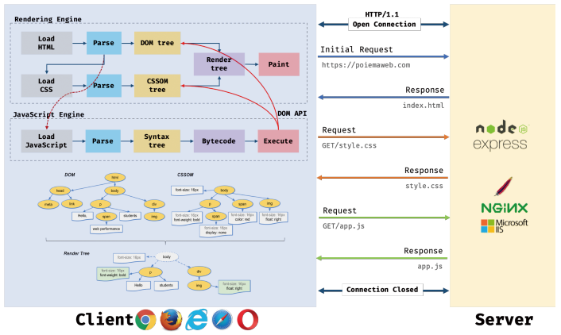
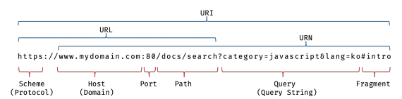
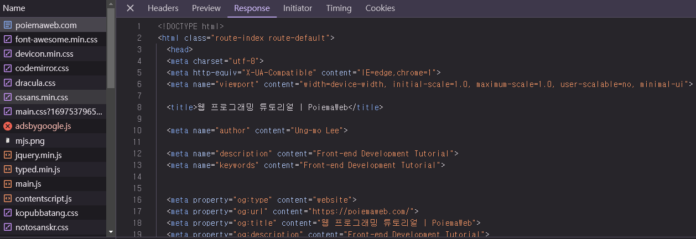
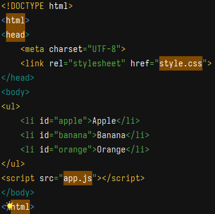
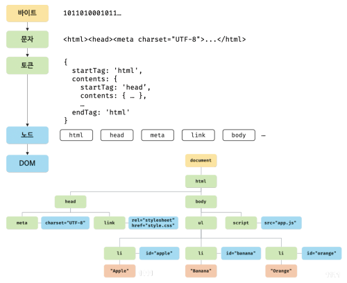
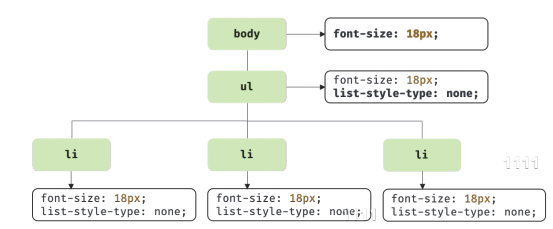
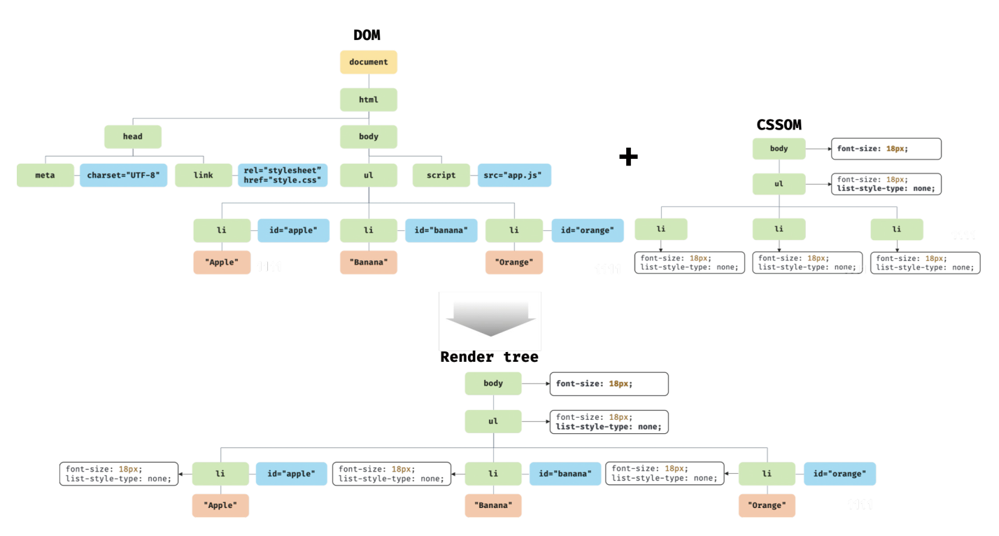
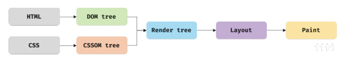
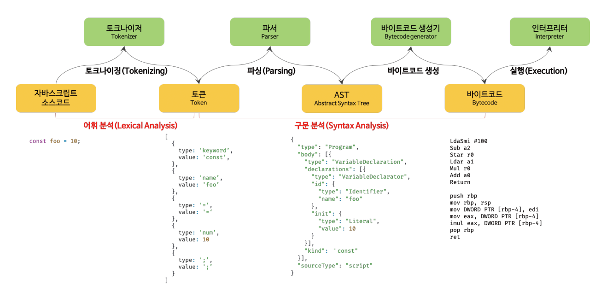
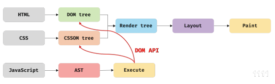

웹 3대장은 어떤 과정으로 브라우저에 표현(렌더링)이 되는 걸까?
웹 3대장
- HTML: 뼈대▶ 웹사이트 콘텐츠 토대
- CSS: 피부▶ 디자인
- Javascript: 근육▶ 동적인 구성 요소

브라우저의 렌더링 과정
- 브라우저: 서버에 렌더링에 필요한 리소스를 요청하고 응답을 받음
- 브라우저 렌더링 엔진: 서버로부터 응답받은 HTML, CSS를 파싱해서 DOM, CSSOM을 생성하고 렌더 트리를 생성
- 브라우저 자바스크립트 엔진: 서버로부터 응답받은 자바스크립트 파싱하여 AST생성, 바이트코드로 변환하여 실행(이때 자바스크립트는 DOM API를 통해 DOM/CSSOM을 변경 가능, 변경된 DOM/CSSOM은 렌더 트리로 재결합)
- 렌더 트리를 기반으로 HTML 요소의 레이아웃 계산
- 브라우저 화면에 HTML 요소 페인팅
#1 브라우저: 서버에 요청 보내고 받기(Request & Response)
- 브라우저의 주소창에 URL 입력
- URI: Uniform Resource Identifier 구조도
- 
- 엔터 키 누름
- URL의 호스트 이름이 DNS를 통해 IP주소로 변환
- IP주소를 갖는 서버에게 요청 전송
- 서버에서 IP주소에 해당하는 데이터 응답
- 루트 요청이라면 암묵적으로 index.html 응답 default 설정
- 루트 요청이 아니라면 설정된 경로에 있는 파일 응답
- 자바스크립트를 통해 서버에 정적/동적 데이터를 요청하는 것도 가능
- 개발자 도구 Network 패널에서 요청/응답사항 확인 가능

- 
- 브라우저 렌더링 엔진은 html 파일뿐만 아니라 html에서 명시한 외부 리서스까지 서버에 요청하고 응답받음
#2 HTML 파싱과 DOM 생성
- 서버가 응답한 HTML: 문자열로 이루어진 순수한 text
- 브라우저가 이해할 수 있는 자료구조(DOM)로 변환, 메모리에 저장
- 브라우저에 렌더링

HTML parsing -> DOM 생성 예시 HTML

HTML parsing -> DOM 생성
#3 CSS 파싱과 CSSOM 생성
CSSOM 파싱 과정(DOM과 동일)
- 바이트
- 문자
- 토큰
- 노드
- CSSOM(CSS Object Model)
- 
#4 렌더 트리 생성
DOM, CSSOM 생성한 다음에 이 둘을 결합해 렌더 트리로 결합(브라우저 화면에 보이는 노드만 only)

렌더 트리 생성

렌더 트리와 레이아웃/페인트
리렌더링: 레이아웃 계산, 페인팅 재실행하는 작업(비용이 많이 들어서 지양 권장)
리렌더링 트리거
- 자바스크립트: 노드 추가/삭제
- 브라우저 창 리사이징: 뷰포트 크기 변경
- HTML 요소 레이아웃에 변경을 발생시키는 스타일 변경
#5 자바스크립트 파싱, 실행

자바스크립트 파싱과 실행
#6 리플로우, 리페인트

DOM API 리플로우, 리페인트
#7 script tag > async/defer attribute
 직렬적 파싱
직렬적 파싱